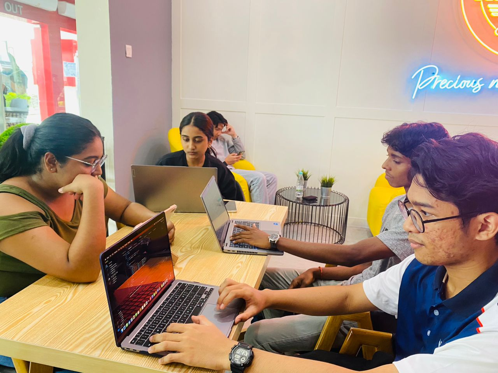
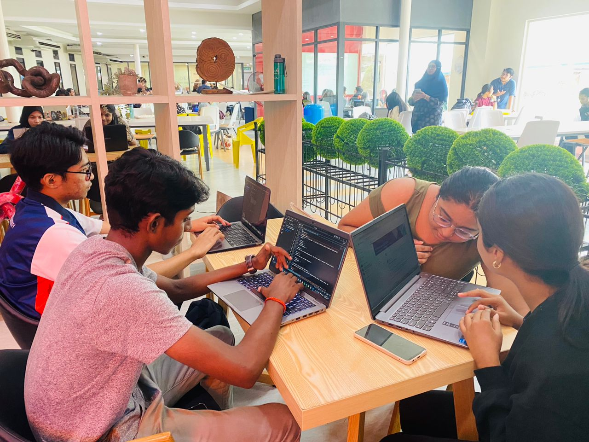

- Create chronological timeline about the development of the devices.
- Compare and contrast the devices from each generations.
- Use multiple input devices to give instructions to the computer to perform an action as a test and observe if the devices reverts to our action through an output device.
- Make a slideshow of VR headsets of each generations.